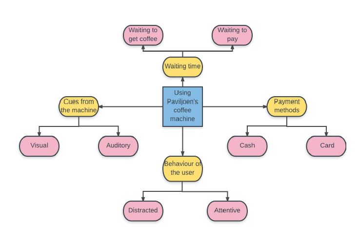

Why does it take time to buy coffee using the pavijlioen’s coffee
machine?
Introduction
As part of the behvioral research methods course, we had to pick a technology in our surronding that is supposed to make life hassle free but it does not. We picked one such machine we interact with often, especially during breaks in between lectures: a coffee dispenser. Coffee machines are found in every building at Tu/e campus. The coffee dispenser in the cafeteria of the Pavijlioen building on the Tu/e campus is what we chose to work with because we noticed that it takes more time to get coffee in the cafeteria than at other vending machines in the buildings.
My Role
I was invovled in observation and analysis of field notes made for all the participants.
Observational Study
In order to find out the underlying reasons for the delay in the entire process, we choose to perform observatioal study. This method was chosen to get to know and explore more about the real experience of people’s behavior in using the coffee machine. We observed people’s behavior when they used the coffee machine in the Paviljoen’s canteen during the break-time for three days. We took a position from where we could observe people from a distance but clearly to see participants’ behavior. All the observers did a number of observations and field notes were taken for each participant.
Although, lack of cues can cause a delay, in some cases this was also enhanced by the ineffective payment method adopted at the canteen. Participants after getting their coffee or tea, had to stand in another queue at the payment desk where many a time the cashier was absent or was too crowded during peak times. Further, we observed that participants, when they were alone, got lost in their thoughts or phone and got engaged in conversation with their friends when they came with a group. This also created delay in the process.
Results
Data from the field notes were categorised into four main themes.

Of the four themes, the one theme that occurred the most, almost in all the observations was the “cues” or the delay created due to the lack of any auditory or visual cues. From the manifestation of the theme “cues” in the observations, it can be inferred that, there is strong association between “cues” and delay in the process of buying coffee.
Click here to read the complete report.